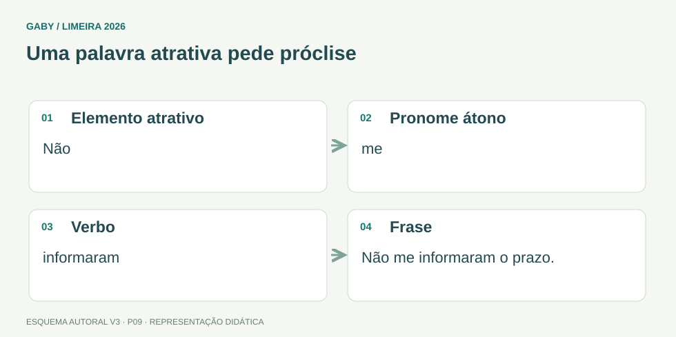

Objetivos do módulo
- Distinguir próclise, ênclise e mesóclise.
- Reconhecer palavras que atraem o pronome.
- Evitar construções inadequadas em início de oração na norma formal.
- Aplicar as regras ao futuro, ao infinitivo, ao gerúndio, ao particípio e às locuções verbais.
- Formar a mesóclise e as variantes lo, la, no, na com hífen e acento corretos.
- Diferenciar o uso brasileiro da norma-padrão, inclusive no tratamento formal e na redação oficial.
Uma palavra atrativa pede próclise

Descrição em texto do esquema
- Elemento atrativo: Não
- Pronome átono: me
- Verbo: informaram
- Frase: Não me informaram o prazo.
Oficina visual · aplique o esquema
Reescreva na norma-padrão: “Não informaram-me a mudança.”
Atividade autoral complementar da V3. Registre sua resposta; a resolução está no arquivo de gabarito e revisão.
Mapa do conteúdo
1. Três posições
Os pronomes oblíquos átonos são me, te, se, o, a, os, as, lhe, lhes, nos, vos. Eles não têm acento próprio e se apoiam no verbo. Colocação pronominal é a posição desse pronome em relação ao verbo: antes, depois ou no meio dele.
| Nome | Posição | Exemplo | Hífen |
|---|---|---|---|
| Próclise | antes do verbo | Não me avisaram. | não leva |
| Ênclise | depois do verbo | Avisaram-me. | leva um hífen |
| Mesóclise | no meio do verbo | Avisar-me-ão. | leva dois hífens |
Hífen na colocação
O hífen liga o pronome ao verbo somente quando o pronome vem depois do verbo ou dentro dele. O Acordo Ortográfico (Base XVII) manda usar hífen na ênclise e na mesóclise, que o texto do Acordo chama de tmese. O Manual de Redação da Presidência (item 9.1) também lista, entre os usos do hífen, unir pronomes átonos a verbos.
- Ênclise: chamou-nos, entregue-lhe.
- Mesóclise: chamar-nos-á, com um hífen de cada lado do pronome.
- Próclise: não nos chamou, sem hífen. Escrever não nos-chamou ou não-nos chamou é erro.
Se a palavra com ênclise ou mesóclise for dividida no fim da linha exatamente no hífen, ele se repete no início da linha seguinte: ajudá- / -los.
2. Fatores de próclise
Palavras negativas, pronomes relativos, indefinidos, interrogativos, conjunções subordinativas e certos advérbios podem atrair o pronome. Exemplos: “Não me diga”; “Quem te informou?”; “Quando me chamarem, irei”.
Esses elementos se chamam palavras atrativas (ou fatores de próclise). Quando aparecem antes do verbo, sem pausa entre eles e o verbo, puxam o pronome para antes do verbo. Nesses casos, a norma-padrão exige a próclise, mesmo com o verbo no futuro.
| Caso | Regra | Exemplo correto | Erro comum |
|---|---|---|---|
| Palavra negativa: não, nem, nunca, jamais, ninguém, nada, nenhum | próclise | Ninguém me consultou. / Jamais te esqueceremos. | Ninguém consultou-me. |
| Advérbio sem pausa: sempre, já, ainda, talvez, aqui, bem, só | próclise | Aqui se resolve tudo. / Talvez nos chamem amanhã. | Aqui resolve-se tudo. |
| Advérbio seguido de vírgula | a pausa corta a atração; sem outro atrativo, ênclise | Amanhã, encerra-se a inscrição. | Amanhã, se encerra a inscrição. |
| Pronome relativo: que, quem, cujo, o qual, onde | próclise ao verbo da oração relativa | O livro que me emprestaste sumiu. / A cidade onde nos conhecemos mudou. | O livro que emprestaste-me sumiu. |
| Pronome indefinido: alguém, algo, tudo, todos, muitos, poucos, qualquer | próclise | Tudo se esclareceu. / Muitos nos procuraram. | Tudo esclareceu-se. |
| Pronome demonstrativo: isso, isto, aquilo | próclise | Isso me preocupa. | Isso preocupa-me. |
| Pronome ou advérbio interrogativo: quem, que, qual, quando, onde, como, por que | próclise | Como se chama o novo diretor? | Como chama-se o novo diretor? |
| Conjunção subordinativa: que, se, quando, embora, caso, como, porque, conforme, logo que, ainda que | próclise | Avise caso se atrase. / Espero que se lembrem do prazo. | Espero que lembrem-se do prazo. |
| Oração exclamativa (iniciada por como, quanto, que) | próclise | Como se enganaram! / Quanto me alegra a notícia! | Como enganaram-se! |
| Oração optativa (exprime desejo) | próclise | Deus te ajude! / Oxalá nos aprovem! | Deus ajude-te! |
| Preposição em + gerúndio | próclise | Em se confirmando a data, avisaremos. | Em confirmando-se a data… |
| Conjunções alternativas: ou… ou, ora… ora, quer… quer | próclise | Ou nos ajuda, ou nos deixa trabalhar. | Ora cala-se, ora queixa-se. |
Pausa: a vírgula desfaz a atração do advérbio
O advérbio só atrai o pronome quando está colado ao verbo. Se uma vírgula separa o advérbio do verbo, o advérbio deixa de atrair, e o verbo passa a abrir um novo segmento. Sem outra palavra atrativa, usa-se ênclise.
- Sem pausa: Logo se percebeu o engano.
- Com pausa: Logo depois, percebeu-se o engano.
A palavra negativa não nunca é separada do verbo por vírgula; por isso sempre atrai.
Pronome relativo: cada pronome fica com o seu verbo
Na oração iniciada por pronome relativo, o átono vai para antes do verbo dessa oração. Antes de mover o pronome, descubra de qual verbo ele é complemento. Em O técnico que nos visitou consertou a impressora, nos completa visitou (o técnico visitou a nós). Em O técnico que visitou consertou-nos a impressora, o pronome passa a completar consertou, e a frase diz outra coisa.
O mesmo vale para cujo e o qual: O servidor cuja ficha se perdeu refez o cadastro; A sala na qual nos reunimos estava fria.
Teste prático
- Olhe a palavra imediatamente antes do verbo (ou do auxiliar, na locução).
- Se ela for negativa, advérbio sem vírgula, relativo, indefinido, demonstrativo, interrogativo, conjunção subordinativa, palavra exclamativa ou expressão de desejo, use próclise.
- Se houver vírgula entre essa palavra e o verbo, ela não conta: recomece a análise a partir do verbo.
3. Ênclise e início de oração
Na tradição da norma-padrão escrita, evita-se iniciar oração com pronome oblíquo átono: prefere-se “Informaram-me” a “Me informaram” em contexto formal de prova. Sem fator de atração, a ênclise pode ser adequada.
A ênclise é a colocação básica da norma-padrão quando nada atrai o pronome. Ela é a escolha certa nos casos abaixo.
| Caso | Regra | Exemplo correto | Erro comum |
|---|---|---|---|
| Verbo no início do período | ênclise; não se inicia período com pronome átono | Chamaram-te na portaria. | Te chamaram na portaria. |
| Verbo logo depois de pausa (vírgula, ponto e vírgula), sem atrativo | ênclise | Terminada a reunião, despediram-se os visitantes. | Terminada a reunião, se despediram os visitantes. |
| Imperativo afirmativo | ênclise | Sente-se, por favor. / Avisem-nos da decisão. | Se sente, por favor. |
| Imperativo negativo (contraste) | próclise, porque o não atrai | Não se preocupe. | Não preocupe-se. |
A ênclise também é a regra com o infinitivo impessoal solto e com o gerúndio sem palavra atrativa; esses casos estão na seção 6.
Teste prático: se a frase começa pelo verbo, o pronome vai depois dele. Se a frase começa por não, o pronome vai antes. Compare Diga-me a verdade com Não me diga a verdade.
4. Mesóclise
A mesóclise ocorre com futuro do presente ou futuro do pretérito quando não há fator de próclise: “Enviar-lhe-ei”. É pouco comum na fala, mas pode aparecer em questões normativas. Se houver atrativo, usa-se próclise: “Não lhe enviarei”.
Como formar a mesóclise
Separe a forma do futuro em duas partes: a base (o infinitivo ou, nos verbos irregulares, a base própria do futuro) e a terminação. O pronome entra entre elas, com hífen dos dois lados.
- Futuro do presente, terminações -ei, -ás, -á, -emos, -eis, -ão: avisarei → avisar-te-ei; venderemos → vender-lhe-emos.
- Futuro do pretérito, terminações -ia, -ias, -ia, -íamos, -íeis, -iam: entregaria → entregar-nos-ia; partiriam → partir-se-iam.
- Verbos com base irregular: fazer → far- (far-se-ão); dizer → dir- (dir-te-ia); trazer → trar- (trar-nos-á). O verbo pôr mantém a base com acento: pôr-se-iam.
O pronome não vai depois da forma inteira do futuro (avisarei-te) nem depois da terminação (avisar-ei-te): essas formas não existem.
Futuro: qual colocação usar
| Caso | Regra | Exemplo correto | Erro comum |
|---|---|---|---|
| Futuro no início do período | mesóclise | Convidar-te-emos para a posse. | Te convidaremos para a posse. / Convidaremos-te… |
| Futuro com palavra atrativa antes | próclise; a mesóclise fica afastada | Ninguém te convidaria. / Jamais nos cobrarão. | Ninguém convidar-te-ia. / Ninguém convidaria-te. |
| Futuro logo depois de pausa, sem atrativo | mesóclise | Concluída a obra, inaugurá-la-emos. | Concluída a obra, inauguraremo-la. |
| Futuro no meio da frase, depois do sujeito, sem atrativo | mesóclise; a próclise também é aceita | O prefeito receber-nos-á amanhã. / O prefeito nos receberá amanhã. | O prefeito receberá-nos amanhã. |
5. Formas o, lo, no e acento
Os pronomes o, a, os, as (objeto direto) mudam de forma conforme a terminação do verbo a que se ligam na ênclise ou na mesóclise. Na próclise, ficam sempre o, a, os, as: Não o vi. O pronome lhe não sofre essas mudanças: entregar-lhe, disseram-lhe.
| Terminação do verbo | O que acontece | Exemplos |
|---|---|---|
| vogal ou ditongo oral | o pronome não muda | vendo-o, comprei-a, deixou-os |
| -r, -s ou -z | a consoante cai e o pronome vira -lo, -la, -los, -las | assinar + o → assiná-lo; fizemos + as → fizemo-las; fez + o → fê-lo |
| som nasal: -m, -ão, -õe | o pronome vira -no, -na, -nos, -nas | trouxeram + o → trouxeram-no; dão + o → dão-no; põe + a → põe-na |
| mesóclise | o r da base cai antes de -lo, -la | vender + o + ei → vendê-lo-ei; trar + a + emos → trá-la-emos; far + o + ia → fá-lo-ia |
A regra das terminações -r, -s e -z vale também depois de eis: ei-lo, ei-las.
Acento depois da queda do r, s ou z
Quando a consoante cai, a forma que sobra pode ficar oxítona terminada em a, e ou o e, nesse caso, recebe acento como qualquer oxítona: assiná-lo, vendê-la, compô-los, pô-la. O Acordo Ortográfico (Base VIII) traz exemplos desse tipo, como adorá-lo, fazê-la e pô-la. Terminada em i depois de consoante, a forma não leva acento: abri-lo, dividi-las.
Cuidado com nos
Chamaram-nos pode significar "chamaram a nós" ou "chamaram os meninos", porque os vira nos depois de som nasal. O contexto decide. Formas como chamaram-os e chamaram-los estão erradas.
Teste prático: veja a última letra ou som do verbo. Terminou em r, s ou z: lo. Terminou em som nasal: no. Nos demais casos: o.
6. Infinitivo, gerúndio e particípio
Infinitivo (avisar), gerúndio (avisando) e particípio (avisado) são as formas nominais do verbo. Cada uma tem regra própria de colocação.
Infinitivo
| Caso | Regra | Exemplo correto | Erro comum |
|---|---|---|---|
| Infinitivo impessoal solto, sem atrativo | ênclise | É proibido alterá-lo. / Revisá-lo levará uma hora. | É proibido alterar-o. |
| Infinitivo precedido de preposição (para, sem, de, por) | próclise ou ênclise: as duas são aceitas | para te ouvir / para ouvir-te; sem nos avisar / sem avisar-nos | para te-ouvir (hífen na próclise) |
| Preposição + negativa + infinitivo | as duas são aceitas | para não a perder / para não perdê-la | para não perder-a |
Duas observações do material do STJ (dica 23): com infinitivo flexionado depois de preposição, a próclise é de rigor (Antes de nos reunirmos, leia a pauta); e, se a preposição for a e o pronome for o, a, os, as, a ênclise é obrigatória (Começou a ajudá-la).
Gerúndio
- Sem palavra atrativa: ênclise. Organizou a fila, tornando-a mais rápida.
- Precedido da preposição em: próclise. Em se confirmando a data, avisaremos. A expressão mais cobrada é em se tratando de.
- Precedido de negação ou de advérbio: próclise. Não o achando, deixe recado.
Particípio
O particípio (avisado, entregue, feito) não admite ênclise: nunca se escreve pronome depois dele. Nos tempos compostos (ter ou haver + particípio) e na voz passiva (ser + particípio), o pronome se liga ao verbo auxiliar.
| Caso | Regra | Exemplo correto | Erro comum |
|---|---|---|---|
| Tempo composto sem atrativo | ênclise ou próclise ao auxiliar | Os vizinhos tinham-me alertado. / Os vizinhos me tinham alertado. | Os vizinhos tinham alertado-me. |
| Tempo composto com atrativo | próclise ao auxiliar | Ninguém nos havia alertado. | Ninguém havia-nos alertado. / Ninguém havia alertado-nos. |
| Voz passiva | pronome com o auxiliar ser | Foi-lhe concedida a licença. / Nenhum documento nos foi enviado. | Foi concedida-lhe a licença. |
7. Locuções verbais
Locução verbal é a combinação de um verbo auxiliar (ir, poder, dever, querer, estar, ter de, começar a…) com um verbo principal no infinitivo, no gerúndio ou no particípio. Com particípio, vale a regra da seção 6: o pronome fica com o auxiliar. Com infinitivo e gerúndio, há mais posições possíveis.
| Caso | Regra | Exemplo correto | Erro comum |
|---|---|---|---|
| Auxiliar + infinitivo, sem atrativo | ênclise ao auxiliar, ênclise ao infinitivo ou próclise ao auxiliar | O gerente quer-lhe falar. / O gerente quer falar-lhe. / O gerente lhe quer falar. | Lhe quero falar. (início de período) |
| Auxiliar + infinitivo, com atrativo | próclise ao auxiliar ou ênclise ao infinitivo | Ninguém nos pode impedir. / Ninguém pode impedir-nos. | Ninguém pode-nos impedir. |
| Auxiliar + gerúndio, sem atrativo | ênclise ao auxiliar, ênclise ao gerúndio ou próclise ao auxiliar | Os prazos vão-se esgotando. / Os prazos vão esgotando-se. / Os prazos se vão esgotando. | Os prazos vão esgotando se. (sem hífen) |
| Auxiliar + gerúndio, com atrativo | próclise ao auxiliar ou ênclise ao gerúndio | Ninguém o estava ajudando. / Ninguém estava ajudando-o. | Ninguém estava-o ajudando. |
Negação antes da locução
A palavra atrativa puxa o pronome para antes do auxiliar, mas o pronome também pode ficar depois do infinitivo ou do gerúndio, ligado por hífen. Por isso Não posso atendê-lo agora está tão correta quanto Não o posso atender agora. O que a norma-padrão rejeita, havendo atrativo, é o pronome preso ao auxiliar depois dele: Não posso-o atender, Não vai-se resolver.
Teste prático: com atrativo, o pronome pode ficar no começo da locução (antes do auxiliar) ou no fim dela (depois do infinitivo ou gerúndio), nunca no meio com hífen.
8. Norma-padrão, uso brasileiro e tratamento formal
Início de frase: fala × norma-padrão
Na fala e na escrita informal do Brasil, é comum começar a frase com o pronome, sobretudo com me: Me empresta a caneta? As gramáticas registram esse uso como característico do português do Brasil, assim como a preferência geral pela próclise. A gramática normativa tradicional, porém, só o admite na conversa familiar ou para reproduzir a fala de alguém. Na norma-padrão cobrada em prova, não se inicia período com pronome oblíquo átono: Empresta-me a caneta?
Teste prático: se a questão pede a norma-padrão, frase que começa pelo pronome átono antes do verbo (Me ajude, Lhe peço, Se sente) está errada. Cuidado: em Se me chamarem, irei, o primeiro se é conjunção, não pronome.
| Situação | Uso brasileiro comum | Norma-padrão (prova) |
|---|---|---|
| Início de frase | Te espero às oito. | Espero-te às oito. |
| Imperativo afirmativo | Me desculpe. | Desculpe-me. |
| Locução verbal | Vou lhe explicar. | Vou explicar-lhe. / Vou-lhe explicar. |
| Tempo composto | Ela tinha se mudado. | Ela tinha-se mudado. / Ela se tinha mudado. |
| Futuro | Te ligarei amanhã. | Ligar-te-ei amanhã. |
O pronome solto entre os verbos da locução, sem hífen (vou lhe explicar, pode se atrasar), também é registrado pelas gramáticas como uso brasileiro. Ele não é, porém, uma das posições da tradição, e os gramáticos divergem sobre aceitá-lo na escrita formal. As questões deste assunto trabalham com as posições tradicionais: em questão que pede a norma-padrão, prefira as posições da seção 7.
Colocação no tratamento formal e na redação oficial
O Manual de Redação da Presidência da República (3ª ed., item 3.6) exige o padrão culto do idioma nos atos e expedientes oficiais. Em ofícios, e-mails institucionais e requerimentos, siga as regras desta aula: nenhum período iniciado por pronome átono e nenhuma ênclise ao futuro.
Os pronomes de tratamento (Vossa Senhoria, Vossa Excelência) referem-se à pessoa com quem se fala, mas levam a concordância para a terceira pessoa (Manual, item 4.1.1). Pela mesma regra, os átonos que retomam esses tratamentos são o, a, lhe e se, e não vos ou te.
| Caso | Regra | Exemplo correto | Erro comum |
|---|---|---|---|
| Frase de ofício iniciada pelo verbo | ênclise | Encaminho-lhe, em anexo, a planilha. | Lhe encaminho, em anexo, a planilha. |
| Pedido com que | próclise | Solicito a Vossa Senhoria que se manifeste até sexta-feira. | Solicito a Vossa Senhoria que manifeste-se… |
| Que subentendido (também atrai) | próclise | Solicito a Vossa Senhoria se digne autorizar a viagem. | Solicito a Vossa Senhoria digne-se autorizar… |
| Futuro no documento | mesóclise sem atrativo; próclise com atrativo | Informar-lhe-emos o resultado. / Não lhe enviaremos cópia impressa. | Informaremos-lhe o resultado. |
| Átono referente ao tratamento | terceira pessoa | Comunico a Vossa Excelência que o recurso lhe será enviado hoje. | …que o recurso vos será enviado hoje. |
Roteiro para resolver questões
- Ache o verbo (ou a locução) de que o pronome é complemento.
- Procure palavra atrativa imediatamente antes, sem vírgula. Se houver, use próclise (na locução: antes do auxiliar ou depois do infinitivo ou gerúndio).
- Sem atrativo, veja se o verbo inicia o período ou vem logo após pausa: não comece com o pronome.
- Verbo no futuro do presente ou do pretérito sem atrativo: mesóclise; ênclise nunca.
- Particípio: o pronome vai com o auxiliar.
- Por fim, confira a forma do pronome (o, lo, no) e o hífen.
Exemplos resolvidos passo a passo
Exemplo 1
Situação: “Não avisaram-me” ou “Não me avisaram”?
Exemplo 2
Situação: “Enviar-lhe-ei o documento” é qual colocação?
Exemplo 3 — advérbio com e sem vírgula
Situação: Classifique quanto à norma-padrão: (a) “Hoje se decidiu o horário”; (b) “Hoje, decidiu-se o horário”; (c) “Hoje, se decidiu o horário”.
Exemplo 4 — locução verbal com negação
Situação: Complete com o verbo atender e o pronome o: “Não posso ___ agora”.
Exemplo 5 — futuro com e sem atrativo
Situação: Substitua “o material” por pronome em “Devolveremos o material na segunda-feira”: (a) mantendo o início da frase; (b) acrescentando “Nunca” no início.
Exemplo 6 — tratamento formal
Situação: Corrija o trecho de um e-mail institucional: “Lhe envio o relatório e peço que confirme-me o recebimento”.
Pegadinhas e erros frequentes
- Ignorar atração da palavra negativa.
- Iniciar frase formal com pronome átono.
- Usar mesóclise mesmo quando há fator de próclise.
- Usar ênclise com futuro do presente ou do pretérito (pagarei-lhe, seria-nos).
- Pôr hífen na próclise (não me-disse).
- Ligar o pronome ao particípio (tinha avisado-me).
- Esquecer que a vírgula depois do advérbio corta a atração.
- Na locução com palavra atrativa, prender o pronome ao auxiliar depois dele (não vai-se resolver).
- Achar que a negação antes da locução torna errada a ênclise ao infinitivo (não posso atendê-lo está certa).
- Esquecer as formas lo e no (chamar-o, fizeram-o).
- Mudar o pronome de verbo na oração relativa e alterar o sentido.
- Usar vos ou te para retomar Vossa Senhoria ou Vossa Excelência.
Resumo de prova
- Próclise = antes; ênclise = depois; mesóclise = meio.
- Negação e pronomes relativos atraem.
- Início formal favorece ênclise.
- Futuro sem atrativo pode admitir mesóclise.
- Atraem: negativas, advérbios sem vírgula, relativos, indefinidos, demonstrativos, interrogativos, conjunções subordinativas, exclamações, desejo e em + gerúndio.
- Advérbio seguido de vírgula não atrai: ênclise.
- Ênclise: início de período, após pausa, imperativo afirmativo, infinitivo solto, gerúndio sem atrativo.
- Futuro: mesóclise ou próclise; ênclise nunca.
- Particípio: o pronome vai com o auxiliar.
- Locução com atrativo: antes do auxiliar ou depois do infinitivo ou gerúndio.
- Preposição + infinitivo: próclise ou ênclise.
- -lo, -la após r, s, z; -no, -na após som nasal.
- Hífen só na ênclise e na mesóclise.
- Tratamento formal: padrão culto e átonos de 3ª pessoa (o, a, lhe, se).
Exercícios do módulo
Resolva sem consultar o arquivo de gabarito. As questões são autorais e construídas para treinar os conceitos do edital.
- Não me disseram a verdade.
- Não disseram a verdade-me.
- Me não disseram a verdade.
- Não disseram-me a verdade.
- mesóclise
- crase
- próclise
- ênclise
- aposto
- próclise
- ênclise
- mesóclise
- ênclise
- mesóclise
- próclise
- regência nominal
- próclise
- sempre ênclise
- nenhum pronome
- mesóclise
- Me avisaram-me.
- Avisaram me sem hífen.
- Me avisaram.
- Avisaram-me.
- Quando chamarem eu, irei.
- Quando chamarem-me, irei.
- Quando me chamarem, irei.
- Quando me chamarem-me, irei.
- Não enviar-lhe-ei.
- Não lhe enviarei.
- Não enviarei-lhe sempre.
- Enviar-lhe-ei não.
- depois do verbo
- no meio do verbo
- fora da oração
- antes do verbo
- no meio do futuro
- antes do sujeito
- antes
- depois do verbo
Quando terminar, abra Português 09 - Colocação Pronominal - Gabarito e Revisão.
Checklist de domínio
- ☐ Distinguir próclise, ênclise e mesóclise.
- ☐ Reconhecer palavras que atraem o pronome.
- ☐ Evitar construções inadequadas em início de oração na norma formal.
- ☐ Decidir se o advérbio atrai, conforme haja ou não vírgula.
- ☐ Escolher entre mesóclise e próclise no futuro, sem nunca usar ênclise.
- ☐ Formar mesóclises regulares e irregulares (far-, dir-, trar-, pôr-).
- ☐ Converter o, a em lo, la ou no, na, com acento e hífen corretos.
- ☐ Colocar o pronome em locuções com infinitivo, gerúndio e particípio, com e sem atrativo.
- ☐ Distinguir o uso brasileiro da norma-padrão e aplicar a colocação no tratamento formal.
Meta do módulo: 80% ou mais nas questões, sem depender de consulta.
Referências e conteúdos auxiliares
- Presidência da República — Manual de Redação, 3ª ediçãoClareza, redação oficial, concordância, regência e pontuação. Referência de apoio; modelos locais podem ter regras próprias.
- Academia Brasileira de Letras — VOLPConsulta de grafia e classe gramatical. O vocabulário não é um dicionário de significados.
- Presidência da República — Manual de Redação, 3ª edição: padrão culto, tratamento e hífenConferidos o item 3.6 (padrão culto obrigatório nos atos e expedientes oficiais), o item 4.1.1 (pronomes de tratamento levam a concordância verbal, nominal e pronominal para a 3ª pessoa) e o item 9.1 (hífen para unir pronomes átonos a verbos e sua repetição na translineação em ênclise e mesóclise). Conferido em 18/11/2026.
- Planalto — Decreto nº 6.583/2008 (Acordo Ortográfico)Conferidas a Base XVII (hífen na ênclise e na tmese, isto é, na mesóclise) e a Base VIII (acento nas formas verbais com lo, la após a perda de r, s, z, como adorá-lo, fazê-la, pô-la). Conferido em 18/11/2026.
- Superior Tribunal de Justiça — Dica 22: o uso da prócliseConferidas as partículas atrativas (negativas, advérbios, ênclise após vírgula depois do advérbio, conjunções subordinativas, que subentendido, relativos, indefinidos, frases optativas, exclamativas e interrogativas, coordenativas alternativas). Adaptação do Manual de Padronização de Textos do STJ. Conferido em 18/11/2026.
- Superior Tribunal de Justiça — Dica 21: o uso da êncliseConferidos: ênclise quando não há palavra atrativa; ênclise com gerúndio; próclise com gerúndio precedido de em, de advérbio ou de conjunção. Conferido em 18/11/2026.
- Superior Tribunal de Justiça — Dica 23: mesóclise e casos especiaisConferidos: mesóclise no futuro em início de frase, sem atração e após pausa; próclise aceita no futuro fora do início; infinitivo com preposição (duas posições, próclise com infinitivo flexionado, ênclise com a + o/a); locuções com infinitivo, gerúndio e particípio, com e sem atração; pronome nunca depois do particípio. Conferido em 18/11/2026.
- Universidade Federal de Alfenas (PET Letras) — Minicurso Pronomes ClíticosConferidos: casos de próclise (inclusive demonstrativos, exclamativas, optativas e em + gerúndio), ênclise (imperativo afirmativo, infinitivo impessoal, verbo no início, gerúndio), mesóclise só no futuro, formas o e lo, locuções verbais e particularidades da colocação no Brasil. Conferido em 18/11/2026.
Referências externas de apoio consultadas para a V3 em 27/09/2026. A origem das questões é o material autoral do projeto; estes links não indicam que uma instituição publicou ou validou os exercícios. As páginas externas precisam de internet. Em informática, confira a versão do programa; em legislação, observe o recorte e as regras de atualização do edital.